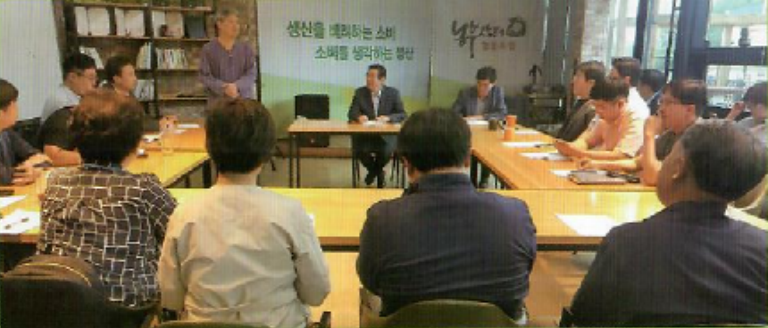
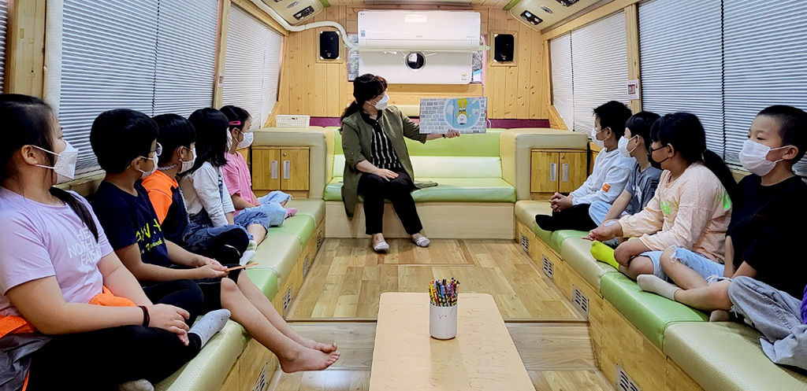

농부장터 소개
직매장 운영
식당 운영
네트워크 사업
교육 사업
조합원 정보
농부장터 역사
찾아오시는 길
생산자와 소비자가
직접만나는 곳
생산자와 소비자 간 마음의 거리는 줄이고
관계를 쌓아가는 이곳은 농부장터 입니다.
■ 로컬푸드 직매장 운영

대구경북 로컬푸드 협의회 참여
● 지역 로컬푸드 축제 운영 및 공동물류 사업 진행
푸드플랜 구축사업
● 먹거리 공공성 강화를 위한 민관협력 거버넌스 구축 및 정책 제안
사회적경제 조직 네트워크 구축 및 사업연계
■ 도농교류 · 문화사업
주말농장 운영
경북 칠곡군 동명면 텃밭 운영
다문화 가족지원센터, 어린이집 등 체험교육 지원
건강밥상교실 운영
지역 생산자와 셰프가 알려주는 레시피로
농부장터<수요밥상>강좌진행
생활 원예 강좌
그린테리어용 화분 및 장식품 만들기 수업 진행
기타 동아리
소비자 조합원 강사가 가리치는 기타 교실 운영
